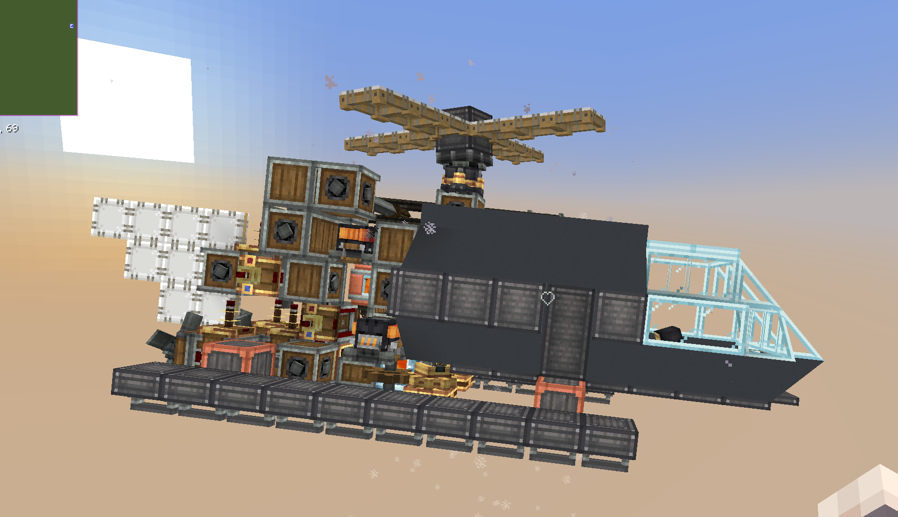
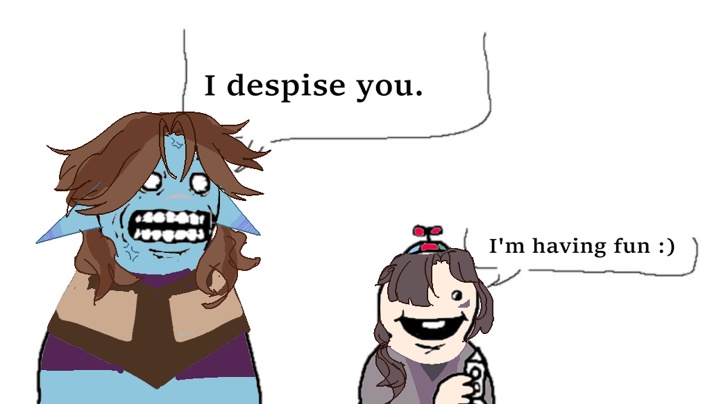
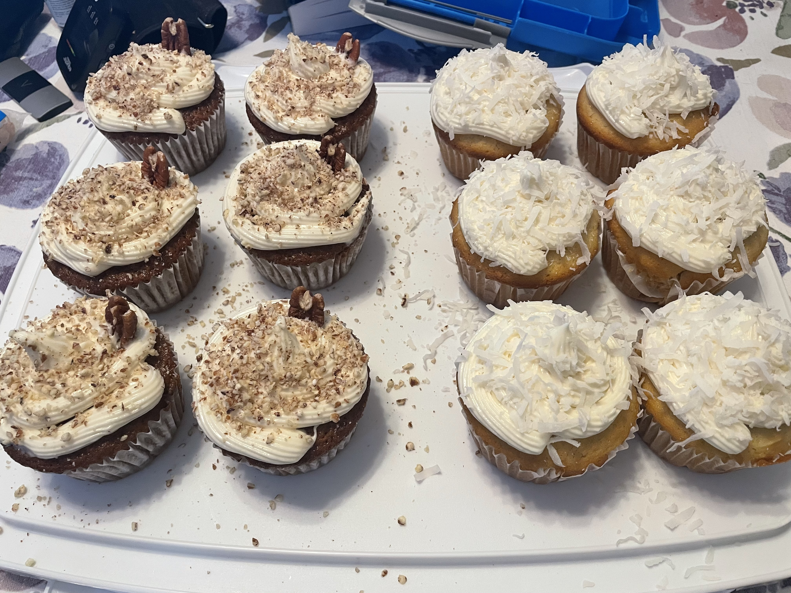
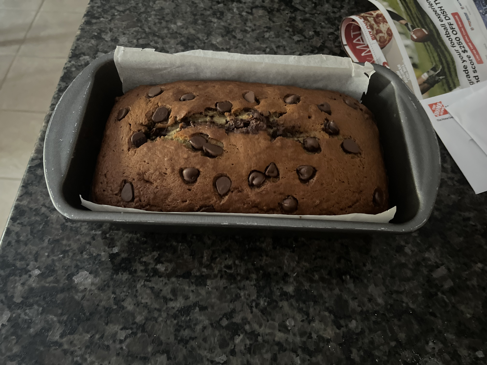
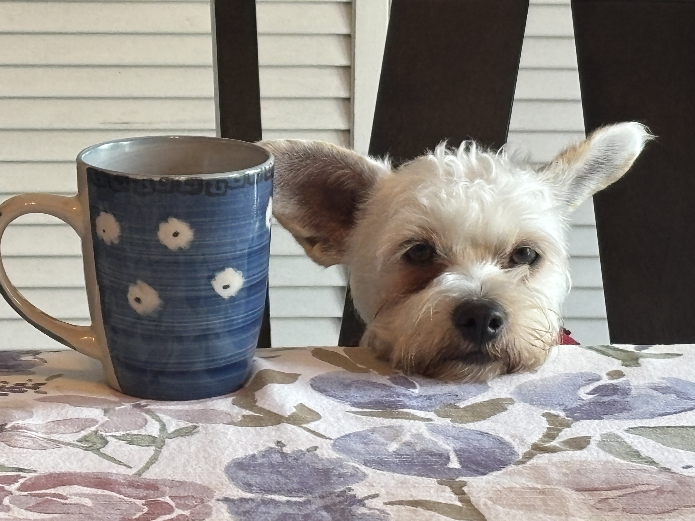
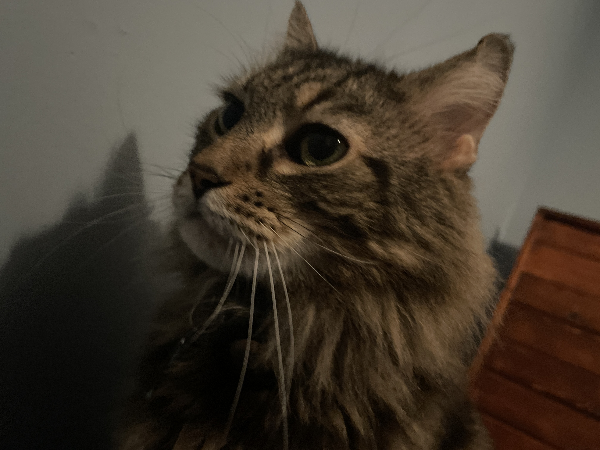

I play several different things, but what I enjoy the most is anything I can experience with friends, or that has a decently difficulty curve to it. Some of such would be like "Minecraft" and "Terraria", but also "Elden Ring" and "The Binding of Isaac". I've made so many friends through gaming and our collection of interests, and despite what all those old grandma's and whatnot say, I do not have a gaming problem 😠


This is probably my favorite hobby of all time. Imagine having fun making it, AND THEN YOU GET TO EAT IT TOO...so awesome. Of the things I have displayed, we have coconut and carrot cake cupcakes, and a chocolate chip banana bread I made just the other day, both were fantastic. I've also made several breads, including sourdough, shokupan, foccaccia, broetchen, and more!


I LOVE MY PETS. I have 4 currently, 2 cats and 2 dogs. The one's displayed here and my ever adorable and also pure evil Biscuit, who just turned 2 last month, and my old kitty Fluffy, who is about 15. Biscuit was a rescue from the side of a road, while Fluffy just started appearing around our house one day when I was in fourth grade (he brought us mice as sacrificial offering). The other two pets are cupcake and oreo (a lot a food names I know, I'm fat, I like food) and while they arent displayed here, thats because I was fighting for my life to get the code to not seperate the images, yippee!